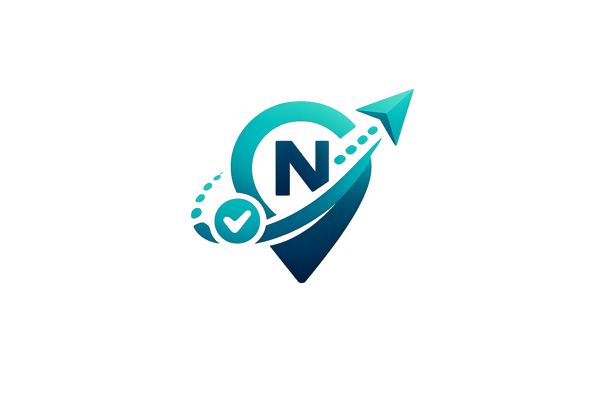

Where We Left Off
Fragmented, high-friction events — ticketing, parking, navigation, exit.
Fans, corporate delegates, organizers — three segments, one pain.
Peak-End Rule: the pain is after entry, not before.
Feedback → Evolution
Kept: the B2B dashboard — it's the revenue engine and our real differentiator. We condensed it, didn't cut it.
Validated: our survey confirmed exit & parking as the #1 pain — see the data next.
Market Opportunity · Secondary Research
Two engines drive India's organized events — live entertainment and MICE. Together they're a ~₹50,000 crore market, and no platform owns the in-venue layer of either.
Sources: FICCI-EY Media & Entertainment Report (live events, 2024–25) · India Tourism Ministry / MICE market estimate (₹37,576 cr, 2024).
Refined Problem
Fragmented logistics — parking, navigation, and exit — quietly ruin the final memory of an event, and no single platform owns the attendee journey from ticket to exit.
Current Alternatives
Ticket booking
Stops at the gate
Parking only
Off from the event
Registration
No in-venue nav
Ask staff, follow crowd, WhatsApp pins
This is our gap
Every option is single-function. Today the real workaround is each other — the frontstage gap we close.
Value Proposition · VP Canvas
One pass that owns the whole in-venue journey — so the memory you keep isn't the memory of getting there.
Segmentation · Targeting · Positioning
| 🎧 Fans | 💼 Delegates | 📊 Organizers | |
|---|---|---|---|
| Mindset | Experience-seekers | Efficiency-driven | ROI & data-hungry |
| Behavior | 1–4 / yr | 3–8 / yr | 10+ / yr |
| Priority | 🥇 Primary | 🥈 Secondary | 🥉 Tertiary |
Customer Journey · Peak-End Rule
Booking & registration; uncertainty about parking and access.
Entry scan, in-venue navigation, engaging with the event.
Exit, parking retrieval, and the memory people share.
Service Blueprint · Delivery Model
Moments of Truth · Recovery Paradox
Capacity · Consistency · Quality
Pricing · Fairness Logic
Anchored to Park+ (₹100–200), bundling parking + nav + updates.
Undercuts Cvent (~$5–15/attendee) with in-venue intelligence.
Foot-traffic, heatmaps, ROI proof — needs BLE data which rivals lack.
Primary Research · 25 attendees + 8 organizers
Source: NexusPass Milestone 1 survey — 25 attendee responses + 8 organizer responses
Frameworks Applied
Bahaduri · Imaandari · Zimmedari · Samajhdari
Risks · Assumptions · Roadmap
Build a working click-through prototype for user testing.
Open one flagship-venue pilot conversation.
Build a break-even unit-economics model.